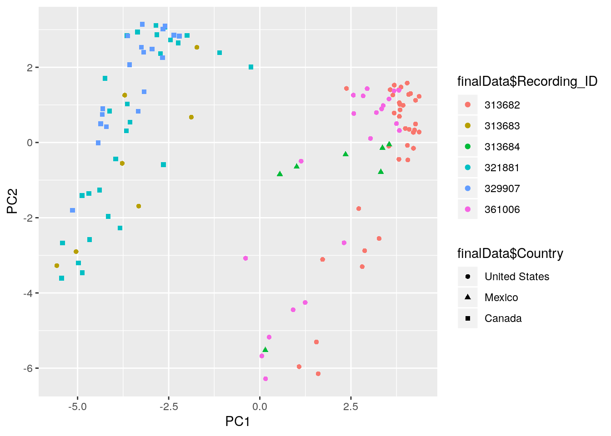
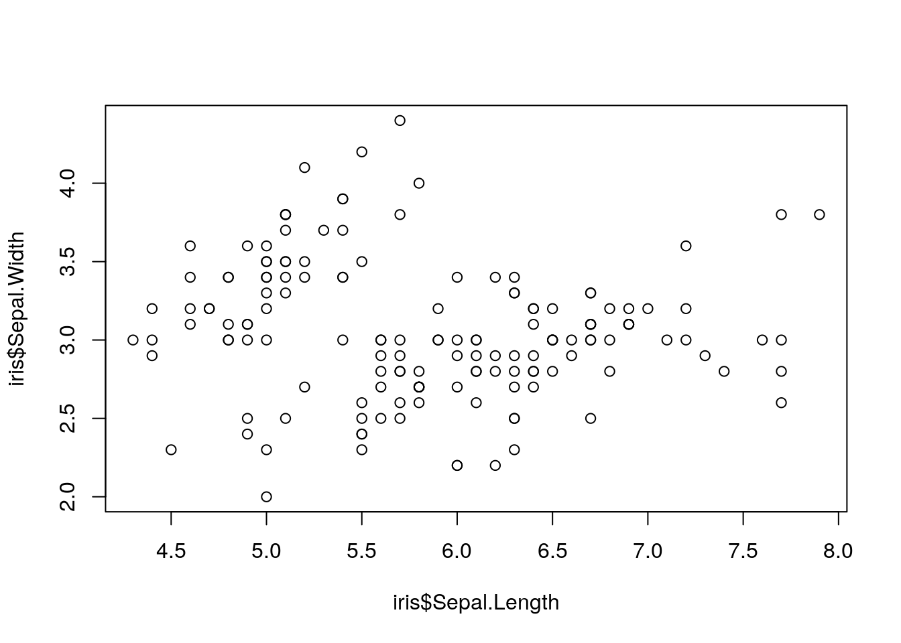

Chapter 14 Databases and R
As we previously saw in Chapter 7, dplyr is a fantastic tool for manipulating data inside the R environment. Up to this point, we have worked with data sets that easily fit within your computer’s memory. Is R capable of working with data sets that are too large to store on your computer? Fortunately R is more than capable of dealing with large data sets (or not so large data sets that are stored remotely in a database). Recently, developers at RStudio have been working on building tools for data scientists to use inside of R to work with databases. Currently there are numerous different ways to work with data from databases in R. In this chapter we will explore some of the many different packages used to query external databases from within R, and we will focus on using dplyr to perform our queries solely in R.
14.1 SQL and Database Structure
In today’s world, there is an extremely large amount of electronic data. The actual amount of existing data is not quite known, as it is pretty much impossible to determine an exact amount. One estimate by IBM stated that 2.5 exabytes (2.5 billion gigabytes) of data were generated every day in 2012. Clearly, we need to have efficient ways to store such incredibly large amounts of data inside computers. In many cases, these data are stored in relational databases.
In simple terms, a database is a collection of similar files. In a relational database, there are numerous data-containing tables that are related to each other by some common field, known as a key. Each table consists of numerous rows and columns, very similar to the way a tibble or any other type of data frame is stored inside of R. One can imagine a database consisting of student records with two tables, one containing the address information of students (called address), and one containing email information of the students (called email). These two tables could perhaps be linked (or joined) together by a common field such as a student identification number. Thus one could join together the two tables to obtain email information and address information for any given student at the same time.
Data analysts and data scientists require a method to do tasks like that described above in databases. Fortunately, almost every relational database is manipulated and stored using SQL, which makes such queries possible.
14.1.1 SQL
SQL62, or Structured Query Language, is an incredibly useful tool for querying and managing relational databases. SQL is common to all major database management systems, such as Oracle, MariaDB, PostgreSQL, MySQL, SQLite, and SQL Server. Each system has slight differences in syntax for certain commands, but the overall basic structure is the same across all database management systems. In order to work with databases, at least a basic understanding of the SQL language is desirable. Here we will give a brief overview of the main structure of a SQL query. If you have minimal SQL background and desire to learn more about databases, we encourage you to use numerous free online resources to help gain experience in using SQL. Some of my favorites include tutorials from W3Schools, tutorialspoint, and SQL Tutorial. There are also numerous free online courses available (i.e. this Stanford course) that you can enroll in and gain experience in querying on sample databases.
14.1.1.1 A Basic Query
Let’s first explore a little bit of SQL syntax. A basic SQL query consists of three different parts:
SELECT: used to select data from a databaseFROM: tells SQL what table to look at to get the dataWHERE: used to filter out different records
Using these three statements you are able to perform queries on the database to extract data from different tables. For example, consider the database mentioned previously consisting of student records. To obtain all the email addresses from the email table, our query would look like this
> SELECT email_address
+ FROM emailIf we only desired the email addresses of the student with id = 001, then we would add a condition using the WHERE clause:
> SELECT email_address
+ FROM email
+ WHERE student_id = '001'Queries of this basic form are used by database programmers numerous times a day in order to obtain needed information from large databases. There are many more features that can be added to this basic query form, including:
AND: added to theWHEREclause, allows for multiple conditions at onceJOIN: connect two tables based on a common featureGROUP BY: group data together according to a certain field to obtain statistics, counts, etc.
Does this remind you of anything we previously studied? Maybe something in Chapter 7? If so, you are correct! The manipulation of data sets in R using dplyr provides many of the same sort of manipulation tools used by SQL, and we will soon see how we can use dplyr directly to query external databases.
SQL also has the ability to update the database, insert new records, and delete records from the database. This is done using the UPDATE, INSERT, and DELETE statements. Here are some simple examples for each of these statements:
> UPDATE email
+ SET email_address = 'doserjef@msu.edu'
+ WHERE student_id = '001'
+
+ DELETE FROM email
+ WHERE email_address = 'doserjef@msu.edu'
+
+ INSERT INTO email
+ VALUES ('001', 'doserjef@msu.edu')Again, this is nowhere near a full introduction to the SQL language, but it will provide you with enough understanding to work with databases within the R framework. If you are interested in databases, we encourage you to seek out some of the additional resources mentioned at the beginning of this section.
14.2 Difficulties of Working with Large Datasets
The first step in using R with databases is to connect R to the database. This leads to many difficulties. As described by Edgar Ruiz, a solutions engineer at RStudio, when connecting to a database in R there is only a “small conduit” between R and the database that often prevents us from being able to work with the data as fast as we can work with local data frames. In order to work around this there have historically been two different options. The first option is to take data from the database in small chunks, save it in R memory, and then analyze it later. This is not desirable because you aren’t dealing with the data directly, so if the data in the database changes this will not be reflected in the data previously loaded into your R memory. A different option is to load all of the data into R. This allows you to see all of the data, but it takes forever to download and it essentially takes over the R session (and it has the same problems as option one regarding changes in the database).
The main problem with these methods is that they are trying to perform the computations locally in R as opposed to performing computations directly on the data in the database using the SQL Engine. Ideally, we want to be able to analyze the data in place. In other words, we want R to somehow send a SQL query over to the database, perform the query using the powerful SQL engine, and then have the database send back an R data frame that we can manipulate in R. This would allow us to avoid performing computations directly in R, which would improve program speed and reduce the amount of storage needed. In addition, we do not want to go back and forth between using R and SQL, as this can cause a lot of unnecessary confusion. As R programmers, we of course want to write solely R code. Fortunately, researchers at RStudio have increased the capabilities of the dplyr package to allow just that.
14.3 Using dplyr to Query the Database
The dplyr package has recently been updated to allow for better communications with external databases. Specifically, you, as the R programmer, can write code in dplyr acting on a database in the same manner in which you use dplyr to work with a data frame in the R environment. dplyr will then behind the scenes convert this R code into a SQL query, will send this query to the database, use the SQL engine to run the query on the data, and will return these data as a data frame in R.
This is the most efficient method for querying databases in R for three reasons:
- We are pushing the computation to the database, allowing us to avoid bringing large amounts of data in the database into the R environment unless we specifically ask R to do it.
- We can use piped code, which greatly enhances the readability of the code.
- All the code is in R. This reduces the cognitive costs that are often associated when using two or more programming languages at the same time.
Next we will go through an example using SQLite to detail exactly how queries on a sample database are performed.
14.3.1 Example with RSQLite
SQLite is arguably the most widely used relational database management system throughout the world. We will first provide a demonstration using a SQLite database as it is relatively easy to install on your system compared to other database management systems. SQLite is different from most database management systems because you don’t have to set up a separate database server. This makes SQLite great for a demo, and surprisingly it can also be very powerful when working with many gigabytes of data. We will use a sample database provided by SQLite called chinook that contains data on store employees, customers, and the music they purchased.
First, go to the link (here)[http://www.sqlitetutorial.net/sqlite-sample-database/] and download the chinook database into your R working directory so you can follow along with this example yourself.
Upon successful download, the first step we need to do is install/load the necessary packages for connecting to the external database. To help dplyr communicate with the SQL engine, install the dbplyr package using install.packages("dbplyr"). Next we need the RSQLite package for interfacing with the SQLite database. Install this by running install.packages("RSQLite") in the R console. Then load the packages, along with dplyr:
> library(dplyr)
> library(dbplyr)
> library(RSQLite)We next use the DBI package to connect directly to the database. DBI is a backend package that provides a common interface for R to work with many different database management systems using the same code. This package does much of the communication from R to the database that occurs behind the scenes, and is an essential part of using dplyr to work with databases.
> library(DBI)
> chinook <- dbConnect(SQLite(), "chinook.db")This command creates a reference to the database, and tells R to connect to this database in a specific location (your location could change depending on where you save the chinook.db file). A similar approach could be used to connect to databases of other database management systems like Oracle, MySQL, PostgreSQL, and others. Most databases do not live in a file, but instead live on another server. This causes the above connection to be much more complex, but for now we will focus on this simple case.
Now lets look closer at the chinook database.
> src_dbi(chinook)src: sqlite 3.22.0 [/home/jeffdoser/Dropbox/teaching/for875/for875-19/bookdown-crc-master/chinook.db]
tbls: albums, artists, customers, employees, genres,
invoice_items, invoices, media_types,
playlist_track, playlists, sqlite_sequence,
sqlite_stat1, tracksThe above function displays the location of the database, as well as the tables contained in the database. You can see in the chinook database there are numerous tables regarding customers, employees, and the music that customers purchased. In total, there are 13 tables contained in this database.
Now that we know the structure of the database, we can perform some simple queries on the data using dplyr syntax. For now, let’s focus on the employees table.
> employees <- tbl(chinook, "employees")
> employees# Source: table<employees> [?? x 15]
# Database: sqlite 3.22.0
# [/home/jeffdoser/Dropbox/teaching/for875/for875-19/bookdown-crc-master/chinook.db]
EmployeeId LastName FirstName Title ReportsTo
<int> <chr> <chr> <chr> <int>
1 1 Adams Andrew Gene… NA
2 2 Edwards Nancy Sale… 1
3 3 Peacock Jane Sale… 2
4 4 Park Margaret Sale… 2
5 5 Johnson Steve Sale… 2
6 6 Mitchell Michael IT M… 1
7 7 King Robert IT S… 6
8 8 Callahan Laura IT S… 6
# ... with 10 more variables: BirthDate <chr>,
# HireDate <chr>, Address <chr>, City <chr>,
# State <chr>, Country <chr>, PostalCode <chr>,
# Phone <chr>, Fax <chr>, Email <chr>Notice how the employees table looks mostly like a regular tibble, but has a couple added lines detailing its location as a remote table in a SQLite database.
Now lets use familiar dplyr commands to perform queries on the database
> employees %>%
+ dplyr::select(LastName, FirstName, Phone, Email) %>%
+ arrange(LastName)# Source: lazy query [?? x 4]
# Database: sqlite 3.22.0
# [/home/jeffdoser/Dropbox/teaching/for875/for875-19/bookdown-crc-master/chinook.db]
# Ordered by: LastName
LastName FirstName Phone Email
<chr> <chr> <chr> <chr>
1 Adams Andrew +1 (780) 428-… andrew@chinookcor…
2 Callahan Laura +1 (403) 467-… laura@chinookcorp…
3 Edwards Nancy +1 (403) 262-… nancy@chinookcorp…
4 Johnson Steve 1 (780) 836-9… steve@chinookcorp…
5 King Robert +1 (403) 456-… robert@chinookcor…
6 Mitchell Michael +1 (403) 246-… michael@chinookco…
7 Park Margaret +1 (403) 263-… margaret@chinookc…
8 Peacock Jane +1 (403) 262-… jane@chinookcorp.…> employees %>%
+ dplyr::filter(Title == "Sales Support Agent") %>%
+ dplyr::select(LastName, FirstName, Address) %>%
+ arrange(LastName)# Source: lazy query [?? x 3]
# Database: sqlite 3.22.0
# [/home/jeffdoser/Dropbox/teaching/for875/for875-19/bookdown-crc-master/chinook.db]
# Ordered by: LastName
LastName FirstName Address
<chr> <chr> <chr>
1 Johnson Steve 7727B 41 Ave
2 Park Margaret 683 10 Street SW
3 Peacock Jane 1111 6 Ave SW > employees %>%
+ group_by(ReportsTo) %>%
+ summarize(numberAtLocation = n())# Source: lazy query [?? x 2]
# Database: sqlite 3.22.0
# [/home/jeffdoser/Dropbox/teaching/for875/for875-19/bookdown-crc-master/chinook.db]
ReportsTo numberAtLocation
<int> <int>
1 NA 1
2 1 2
3 2 3
4 6 2You can see by using dplyr you are able to use the same syntax to query the database as you used to analyze data frames in Chapter 7. The most important difference to again note is that when working with remote databases the R code is translated into SQL and executed in the database using the SQL engine, not in R. When doing this, dplyr is as “lazy” as possible as it never pulls data in R unless explicity asked. It collects everything you ask it to do and then sends it to the database all in one step. This is often a very useful feature when desiring to look at a certain group of records in a database. To understand this further, take a look at the following code, which at first you might think will output a tibble or data frame:
> salesSupportAgents <- employees %>%
+ dplyr::filter(Title == "Sales Support Agent") %>%
+ dplyr::select(LastName, FirstName, Address) %>%
+ arrange(LastName)
> salesSupportAgents# Source: lazy query [?? x 3]
# Database: sqlite 3.22.0
# [/home/jeffdoser/Dropbox/teaching/for875/for875-19/bookdown-crc-master/chinook.db]
# Ordered by: LastName
LastName FirstName Address
<chr> <chr> <chr>
1 Johnson Steve 7727B 41 Ave
2 Park Margaret 683 10 Street SW
3 Peacock Jane 1111 6 Ave SW Notice the first two lines in the output. The source is described as a lazy query and the salesSupportAgents is still a database connection and not a local data frame. Because you did not specifically tell R that you wanted to bring the data directly into R, it did not do so. In order to bring the data directly into R in a local tibble you need to use the collect() function. Note that if you are asking the database to send back a lot of data, this could take a while.
> salesSupportAgents <- employees %>%
+ dplyr::filter(Title == "Sales Support Agent") %>%
+ dplyr::select(LastName, FirstName, Address) %>%
+ arrange(LastName) %>%
+ collect()
> salesSupportAgents# A tibble: 3 x 3
LastName FirstName Address
<chr> <chr> <chr>
1 Johnson Steve 7727B 41 Ave
2 Park Margaret 683 10 Street SW
3 Peacock Jane 1111 6 Ave SW As we’ve seen, for simple tasks, and even many complex tasks, dplyr syntax can be used to query external databases.
14.3.2 dbplot
If we can use dplyr to analyze the data in a database, you may be wondering whether or not we can use ggplot2 to graph the data in the database. Of course we can! In fact, the package dbplot is designed to process the calculations of a plot inside a database and output a ggplot2 object. If not already installed on your system, make sure to install the dbplot package before continuing.
We can use the same chinook database from SQLite we were using above. Suppose we desire to see how many types of each employee there are in the database. We can produce a barplot to show this.
> library(dbplot)
> employees %>%
+ dbplot_bar(Title)
We first load the dbplot package. Next we produce the bar plot. Notice that we can continue to use the convenient %>% character while producing graphs using dbplot, making the code easy to read. Since dbplot outputs a ggplot2 object, we can further customize the graph using familiar functions from ggplot2 (so long as the package is loaded).
> library(ggplot2)
> employees %>%
+ dbplot_bar(Title) +
+ labs(title = "Employee Types") +
+ ylab("Count") +
+ theme_classic()
14.4 Changing Records in the Database
dplyr is fantastic for retrieving data from databases and analyzing it using familiar functions. As detailed in this video, using dplyr is considered a “best practice” when using databases in R because you only have to use one language, you don’t need to know any SQL, and you can use the lazy evaluation of R, among many other reasons. As a data analyst, a majority of work can be accomplished by using dplyr and other forms of queries against a database. But what if you need to do more than query the data in the database and you have to change some of the records? dplyr is not capable of inserting or deleting records in a database, and although updating recordings is possible with dplyr, Hadley Wickham strongly recommends against it, as dplyr is designed specifically for retrieving data. Thus, we need to use other options for updating/inserting/deleting records in a database. Unlike using dplyr this requires a more in depth knowledge of SQL. We will not discuss updating/inserting/deleting records in a database here, but you will briefly learn about methods to do this in this chapter’s exercise.
14.5 R Studio Connections Pane
If by this point in the book you haven’t already been convinced that RStudio is a fantastic IDE for running R then perhaps this will convince you. R Studio has a Connections Pane by default in the top right corner of your screen that makes it easy to connect to a variety of data sources, and better yet, explore the objects and data inside the connection. You can use it with a variety of different packages for working with databases in R, and it will also work with a variety of databases and other datasources (i.e. Spark). This Connections Pane is a great way of exploring the data in a data source once you are connected. If interested, the page here provides a good overview of how to get the most out of these connections.
14.6 Other Options
There are numerous other methods besides dplyr to work with databases in R that involve using more standard SQL queries. If you come from a SQL background and want to use these other methods, then explore the RStudio Databases using R page. But while doing this, keep in mind that we (and R Studio) both recommend using dplyr for querying an external database within R.
14.7 Homework
Exercise Databases Learning objectives: connect to an external database; perform simple queries using dplyr; use data from a database in a Shiny app; learn how to perform changes (update/delete/insert) on a database